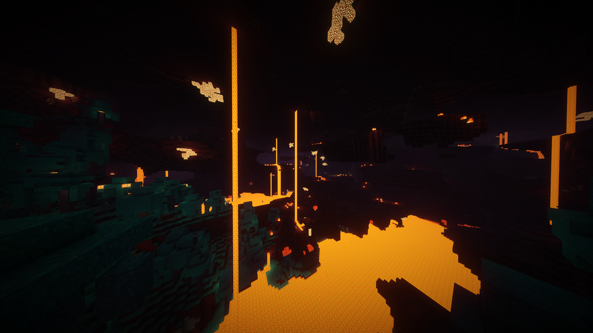

Beyond Vanilla Shader
Hey there! Welcome to the coolest place for shaders - Beyond Vanilla!
About the Shader
So, here's the deal with Beyond Vanilla - it's like adding a sprinkle of magic to your Minecraft world! Think real-looking shadows, reflections that make you go 'whoa', and lighting effects so advanced, it's like playing in a Hollywood movie set!
- Realistic shadows
- Reflections that'll make you do a double-take
- Lighting effects that are next level
- Textures so high-res, you'll feel like you can touch them
Get Your Hands on It!
Ready to amp up your Minecraft experience? Grab the latest version of Beyond Vanilla right here:
How to Install
- Download the
beyond-vanilla.zipfile - Open your Minecraft shaders folder
- Unzip the
beyond-vanilla.zipcontents into the shaders folder - Fire up Minecraft and head to Options > Video Settings
- From the Shaders dropdown, pick Beyond Vanilla
- Click Done and get ready to be blown away!
Sneak a Peek!

Compatibility
Just so you know, Beyond Vanilla plays best with Minecraft 1.14 and up. So make sure you're up-to-date before diving in!
Got any questions or need a hand? Hit me up by opening an issue here!